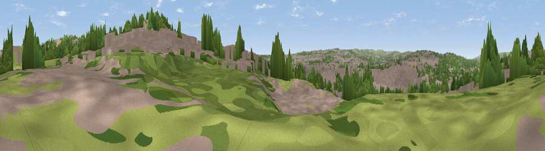

Viewpoint near Bradford
#34617 in England · top 76% of its area beats it · near Bradford · access?Where it is
The exact computed spot (SE 16725 34325). Click the marker for map links.
Public access: no public right of way or access land is recorded at this exact spot — it may be on private land. Computed from Natural England's CRoW access layer and OpenStreetMap rights of way — not the legal definitive map. Always verify locally.
The view, rendered

A 360° render of this exact spot computed from the terrain model, tree cover and land cover — summer colours, afternoon light, calibrated against photographs of famous viewpoints. Real trees, hedges and buildings will differ in detail.
The panorama
Grey silhouette: terrain skyline in each direction (720 bearings, Earth curvature and refraction included). Dashed green: skyline with trees (+15 m) and buildings (+8 m) as obstacles. Blue strip: how far the ground is visible on each bearing.
Where the view opens
Wedge length = distance to the farthest visible ground on that bearing (vegetation-aware). Rings at 10, 25 and 50 km.
What fills the view
58% built-up · 21% grassland · 21% woodland
Angular shares of the visible panorama (visual magnitude), not map area. Landscape diversity 0.43 (0–1 Shannon).
Key numbers
More beautiful places nearby
The staircase of upgrades: each row has a higher view potential than everything closer. Driving times are estimates from straight-line distance, calibrated against real road routing — check an actual route before setting out.
| Place | Direction | Drive | Score |
|---|---|---|---|
| Viewpoint near Bradford | ESE · 0 km | ~2 min | 45.5 |
| Viewpoint near Wrose | N · 2 km | ~5 min | 49.3 |
| Viewpoint near Wrose | N · 3 km | ~7 min | 66.5 |
| Viewpoint near Baildon | NNW · 6 km | ~13 min | 70.4 |
| Rawdon Billing | NE · 7 km | ~15 min | 72.7 |
| Viewpoint near Otley | NNE · 10 km | ~20 min | 77.5 |
| Darwen Hill | WSW · 50 km | ~71 min | 80.7 |
| White Brow | WSW · 55 km | ~77 min | 82.9 |
53.80496, -1.74752 · source: screening · position refined by local search. Computed location — check access rights before visiting.